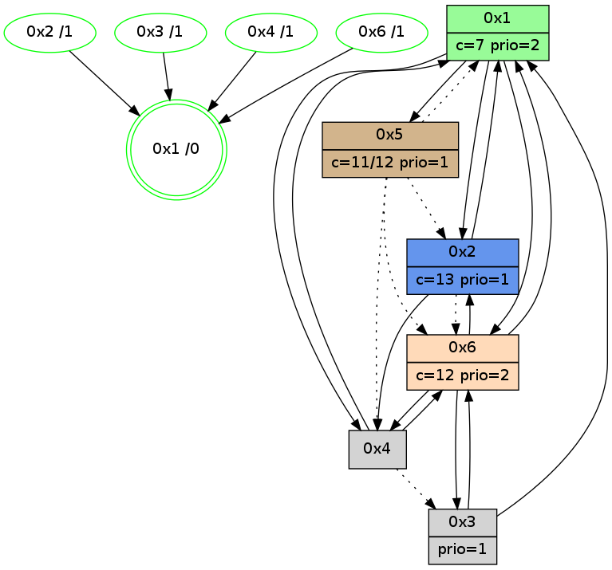

>> << IDX [start] -100 -25 -5 +0 +5 +25 +100 [1040.00420618]
 Previous packets
----------------------------------------------------------------------
1035.053164 beacon01(adaf) #0 coord=01,02,05,03,04,06 cycle=432.0ms assoc
-- color-indic=1 64 3d 64
1035.063125 beacon02(adaf) #0 coord=01,02,05,03,04,06 cycle=432.0ms assoc 64 6c 9b
1035.073125 beacon05(adaf) #0 coord=01,02,05,03,04,06 cycle=432.0ms assoc 64 ca b1
1035.083126 beacon03(adaf) #0 coord=01,02,05,03,04,06 cycle=432.0ms assoc 64 56 95
1035.093126 beacon04(adaf) #0 coord=01,02,05,03,04,06 cycle=432.0ms assoc 64 f0 bf
1035.103127 beacon06(adaf) #0 coord=01,02,05,03,04,06 cycle=432.0ms assoc 64 84 a3
1035.114844 [Hello(4): seq=842 sym=1,6 asym=3 sysInfo=hasWarning stat=1:11,5,7,0/6:2,7,12,5/3:4,4,4,1]
1035.117439 [Color(2) seq=228 @0:0 color=13 prio=1 c=7,c,e;1,4,6,8,9,b]
1035.119062 [Color(3) seq=170 @0:0 prio=1 c=7,c,d;1,4,6,8,9,b,e]
1035.121005 [Color(1) seq=268 @0:0 color=7 prio=2 c=1,4,6,8,9,b,c,d;0,2,3,5,a,e]
----------------------------------------------------------------------
1035.545272 beacon01(adaf) #0 coord=01,02,05,03,04,06 cycle=432.0ms assoc
-- color-indic=1 64 70 63
1035.555232 beacon02(adaf) #0 coord=01,02,05,03,04,06 cycle=432.0ms assoc 64 21 9c
1035.565232 beacon05(adaf) #0 coord=01,02,05,03,04,06 cycle=432.0ms assoc 64 87 b6
1035.575235 beacon03(adaf) #0 coord=01,02,05,03,04,06 cycle=432.0ms assoc 64 1b 92
1035.585234 beacon04(adaf) #0 coord=01,02,05,03,04,06 cycle=432.0ms assoc 64 bd b8
1035.595234 beacon06(adaf) #0 coord=01,02,05,03,04,06 cycle=432.0ms assoc 64 c9 a4
1035.609587 [Hello(6): seq=755 sym=4,2,1,3 sysInfo=hasWarning stat=4:4,0,6,0/2:0,3,1,0/1:2,4,1,1/3:13,12,7,7]
1035.612719 [Color(6) seq=227 @0:0 color=12 prio=2 c=7,d,e;1,4,6,8,9,b]
1035.615009 [Hello(1): seq=742 sym=2,4,6 sysInfo=hasWarning,coloring-mode-on,ColoringModeRequestCalled stat=2:6,9,11,3/4:13,0,9,0/6:4,2,3,4]
----------------------------------------------------------------------
1036.037379 beacon01(adaf) #0 coord=01,02,05,03,04,06 cycle=432.0ms assoc
-- color-indic=1 64 b4 0c
1036.047340 beacon02(adaf) #0 coord=01,02,05,03,04,06 cycle=432.0ms assoc 64 e5 f3
1036.057340 beacon05(adaf) #0 coord=01,02,05,03,04,06 cycle=432.0ms assoc 64 43 d9
1036.067341 beacon03(adaf) #0 coord=01,02,05,03,04,06 cycle=432.0ms assoc 64 df fd
1036.077341 beacon04(adaf) #0 coord=01,02,05,03,04,06 cycle=432.0ms assoc 64 79 d7
1036.087341 beacon06(adaf) #0 coord=01,02,05,03,04,06 cycle=432.0ms assoc 64 0d cb
1036.099057 PARSE ERROR************************
Traceback (most recent call last):
File "PacketAnalysis.py", line 167, in showOperaPacket
structPacket = OperaPacketParse.parsePacket(rawPacket)
File "../../pkg-python/HipSens/Core/OperaPacketParse.py", line 461, in parsePacket
return parseHelloMessage(data)
File "../../pkg-python/HipSens/Core/OperaPacketParse.py", line 125, in parseHelloMessage
struct.unpack("!H",linkList[:2])[0])
error: unpack requires a string argument of length 2
48 1e 04 00 03 4b 00 02 02 04 01 00 06 00 01 02 03 00 53 04 00 02 00 00 4c 06 07 6c 5c 83 14 55 4d 90
1036.101274 [Color(1) seq=269 @0:0 color=7 prio=2 c=1,4,6,8,9,b,c,d;0,2,3,5,a,e]
1036.103289 [Color(3) seq=171 @0:0 prio=1 c=7,c,d;1,4,6,8,9,b,e]
1036.105322 [Color(2) seq=229 @0:0 color=13 prio=1 c=7,c,e;1,4,6,8,9,b]
----------------------------------------------------------------------
1036.529488 beacon01(adaf) #0 coord=01,02,05,03,04,06 cycle=432.0ms assoc
-- color-indic=1 64 f8 bc
1036.539450 beacon02(adaf) #0 coord=01,02,05,03,04,06 cycle=432.0ms assoc 64 a9 43
1036.549449 beacon05(adaf) #0 coord=01,02,05,03,04,06 cycle=432.0ms assoc 64 0f 69
1036.559448 beacon03(adaf) #0 coord=01,02,05,03,04,06 cycle=432.0ms assoc 64 93 4d
1036.569450 beacon04(adaf) #0 coord=01,02,05,03,04,06 cycle=432.0ms assoc 64 35 67
1036.579450 beacon06(adaf) #0 coord=01,02,05,03,04,06 cycle=432.0ms assoc 64 41 7b
1036.590954 [Hello(1): seq=743 sym=2,4,6 sysInfo=hasWarning,coloring-mode-on,ColoringModeRequestCalled stat=2:6,10,11,3/4:13,0,9,0/6:4,2,3,4]
1036.593487 [Hello(6): seq=756 sym=4,2,1,3 sysInfo=hasWarning stat=4:5,0,6,0/2:0,4,1,0/1:3,5,1,1/3:14,13,7,7]
1036.598378 [Color(6) seq=228 @0:0 color=12 prio=2 c=7,d,e;1,4,6,8,9,b]
----------------------------------------------------------------------
1037.021595 beacon01(adaf) #0 coord=01,02,05,03,04,06 cycle=432.0ms assoc
-- color-indic=1 64 3c d3
1037.031556 beacon02(adaf) #0 coord=01,02,05,03,04,06 cycle=432.0ms assoc 64 6d 2c
1037.041556 beacon05(adaf) #0 coord=01,02,05,03,04,06 cycle=432.0ms assoc 64 cb 06
1037.051557 beacon03(adaf) #0 coord=01,02,05,03,04,06 cycle=432.0ms assoc 64 57 22
1037.061557 beacon04(adaf) #0 coord=01,02,05,03,04,06 cycle=432.0ms assoc 64 f1 08
1037.071558 beacon06(adaf) #0 coord=01,02,05,03,04,06 cycle=432.0ms assoc 64 85 14
1037.083266 [Hello(4): seq=844 sym=1,6 asym=3 sysInfo=hasWarning stat=1:13,7,7,0/6:4,9,12,5/3:5,6,4,1]
1037.085868 [Color(2) seq=230 @0:0 color=13 prio=1 c=7,c,e;1,4,6,8,9,b]
1037.087492 [Color(3) seq=172 @0:0 prio=1 c=7,c,d;1,4,6,8,9,b,e]
1037.096307 [Color(1) seq=270 @0:0 color=7 prio=2 c=1,4,6,8,9,b,c,d;0,2,3,5,a,e]
----------------------------------------------------------------------
1037.513703 beacon01(adaf) #0 coord=01,02,05,03,04,06 cycle=432.0ms assoc
-- color-indic=1 64 62 b2
1037.523664 beacon02(adaf) #0 coord=01,02,05,03,04,06 cycle=432.0ms assoc 64 33 4d
1037.533664 beacon05(adaf) #0 coord=01,02,05,03,04,06 cycle=432.0ms assoc 64 95 67
1037.543664 beacon03(adaf) #0 coord=01,02,05,03,04,06 cycle=432.0ms assoc 64 09 43
1037.553664 beacon04(adaf) #0 coord=01,02,05,03,04,06 cycle=432.0ms assoc 64 af 69
1037.563665 beacon06(adaf) #0 coord=01,02,05,03,04,06 cycle=432.0ms assoc 64 db 75
1037.577813 [STC(1) #0.162 new-neigh,tree-change,inconsistent-stability,stable,to-color d=0]
1037.579669 [Hello(5): seq=801 asym=2,1,6,4 sysInfo=hasWarning stat=2:9,11,14,4/1:0,5,9,1/6:3,10,5,5/4:5,0,4,0]
1037.581688 [Hello(6): seq=757 sym=4,2,1,3 sysInfo=hasWarning stat=4:6,0,6,0/2:0,5,1,0/1:4,6,1,1/3:14,14,7,7]
1037.583433 [Color(5) seq=177 @0:0 color=11/12 prio=1 c=8,d;4,7,9,c,e]
1037.586629 [Color(6) seq=229 @0:0 color=12 prio=2 c=7,d,e;1,4,6,8,9,b]
----------------------------------------------------------------------
1038.005811 beacon01(adaf) #0 coord=01,02,05,03,04,06 cycle=432.0ms assoc
-- color-indic=1 64 a6 dd
1038.015774 beacon02(adaf) #0 coord=01,02,05,03,04,06 cycle=432.0ms assoc 64 f7 22
1038.025773 beacon05(adaf) #0 coord=01,02,05,03,04,06 cycle=432.0ms assoc 64 51 08
1038.035773 beacon03(adaf) #0 coord=01,02,05,03,04,06 cycle=432.0ms assoc 64 cd 2c
1038.045773 beacon04(adaf) #0 coord=01,02,05,03,04,06 cycle=432.0ms assoc 64 6b 06
1038.055774 beacon06(adaf) #0 coord=01,02,05,03,04,06 cycle=432.0ms assoc 64 1f 1a
1038.068022 [Hello(4): seq=845 sym=1,6 asym=3 sysInfo=hasWarning stat=1:13,8,8,0/6:5,10,12,5/3:6,7,4,1]
1038.071109 [STC(4)->1 #0.162 new-neigh,tree-change,inconsistent-stability,stable,to-color d=1]
1038.072453 [STC(2)->1 #0.162 new-neigh,tree-change,inconsistent-stability,stable,to-color d=1]
1038.074004 [STC(3)->1 #0.162 new-neigh,tree-change,inconsistent-stability,stable,to-color d=1]
1038.075673 [Color(2) seq=231 @0:0 color=13 prio=1 c=7,c,e;1,4,6,8,9,b]
1038.077362 [TreeStatus(3)-.->1 #0.162 new-neigh,tree-change,inconsistent-stability,stable child=1]
1038.079505 [Color(3) seq=173 @0:0 prio=1 c=7,c,d;1,4,6,8,9,b,e]
1038.083536 [Color(1) seq=271 @0:0 color=7 prio=2 c=1,4,6,8,9,b,c,d;0,2,3,5,a,e]
1038.092360 [TreeStatus(4)-.->1 #0.162 new-neigh,tree-change,inconsistent-stability,stable child=1]
----------------------------------------------------------------------
1038.497921 beacon01(adaf) #0 coord=01,02,05,03,04,06 cycle=432.0ms assoc
-- color-indic=1 64 ea 6d
1038.507882 beacon02(adaf) #0 coord=01,02,05,03,04,06 cycle=432.0ms assoc 64 bb 92
1038.517881 beacon05(adaf) #0 coord=01,02,05,03,04,06 cycle=432.0ms assoc 64 1d b8
1038.527882 beacon03(adaf) #0 coord=01,02,05,03,04,06 cycle=432.0ms assoc 64 81 9c
1038.537882 beacon04(adaf) #0 coord=01,02,05,03,04,06 cycle=432.0ms assoc 64 27 b6
1038.547883 beacon06(adaf) #0 coord=01,02,05,03,04,06 cycle=432.0ms assoc 64 53 aa
1038.559395 [Hello(1): seq=745 sym=2,4,6,5 sysInfo=hasWarning,coloring-mode-on,ColoringModeRequestCalled stat=2:6,10,11,3/4:13,0,9,1/6:6,4,3,4/5:0,0,0,0]
1038.562074 [Hello(6): seq=758 sym=4,2,1,3 sysInfo=hasWarning stat=4:7,0,7,1/2:0,6,2,0/1:4,7,1,1/3:15,15,8,8]
1038.568428 [Color(6) seq=230 @0:0 color=12 prio=2 c=7,d,e;1,4,6,8,9,b]
----------------------------------------------------------------------
1038.990028 beacon01(adaf) #0 coord=01,02,05,03,04,06 cycle=432.0ms assoc
-- color-indic=1 64 2e 02
1038.999990 beacon02(adaf) #0 coord=01,02,05,03,04,06 cycle=432.0ms assoc 64 7f fd
1039.009989 beacon05(adaf) #0 coord=01,02,05,03,04,06 cycle=432.0ms assoc 64 d9 d7
1039.019989 beacon03(adaf) #0 coord=01,02,05,03,04,06 cycle=432.0ms assoc 64 45 f3
1039.029989 beacon04(adaf) #0 coord=01,02,05,03,04,06 cycle=432.0ms assoc 64 e3 d9
1039.039991 beacon06(adaf) #0 coord=01,02,05,03,04,06 cycle=432.0ms assoc 64 97 c5
1039.051682 [Hello(4): seq=846 sym=1,6 asym=3 sysInfo=hasWarning stat=1:14,8,8,0/6:6,10,12,5/3:6,7,4,1]
1039.054280 [Color(2) seq=232 @0:0 color=13 prio=1 c=7,c,e;1,4,6,8,9,b]
1039.055939 [Color(3) seq=174 @0:0 prio=1 c=7,c,d;1,4,6,8,9,b,e]
1039.066666 [Color(1) seq=272 @0:0 color=7 prio=2 c=1,4,6,8,9,b,c,d;0,2,3,5,a,e]
----------------------------------------------------------------------
1039.482137 beacon01(adaf) #0 coord=01,02,05,03,04,06 cycle=432.0ms assoc
-- color-indic=1 64 63 05
1039.492097 beacon02(adaf) #0 coord=01,02,05,03,04,06 cycle=432.0ms assoc 64 32 fa
1039.502099 beacon05(adaf) #0 coord=01,02,05,03,04,06 cycle=432.0ms assoc 64 94 d0
1039.512100 beacon03(adaf) #0 coord=01,02,05,03,04,06 cycle=432.0ms assoc 64 08 f4
1039.522098 beacon04(adaf) #0 coord=01,02,05,03,04,06 cycle=432.0ms assoc 64 ae de
1039.532099 beacon06(adaf) #0 coord=01,02,05,03,04,06 cycle=432.0ms assoc 64 da c2
1039.546457 [Hello(6): seq=759 sym=4,2,1,3 sysInfo=hasWarning stat=4:8,0,7,1/2:0,7,2,0/1:5,8,1,1/3:15,0,8,8]
1039.549589 [Color(6) seq=231 @0:0 color=12 prio=2 c=7,d,e;1,4,6,8,9,b]
1039.558424 [Hello(1): seq=746 sym=2,4,6,5 sysInfo=hasWarning,coloring-mode-on,ColoringModeRequestCalled stat=2:6,10,11,3/4:13,0,9,1/6:7,4,3,4/5:0,0,0,0]
----------------------------------------------------------------------
1039.974244 beacon01(adaf) #0 coord=01,02,05,03,04,06 cycle=432.0ms assoc
-- color-indic=1 64 a7 6a
1039.984205 beacon02(adaf) #0 coord=01,02,05,03,04,06 cycle=432.0ms assoc 64 f6 95
1039.994205 beacon05(adaf) #0 coord=01,02,05,03,04,06 cycle=432.0ms assoc 64 50 bf